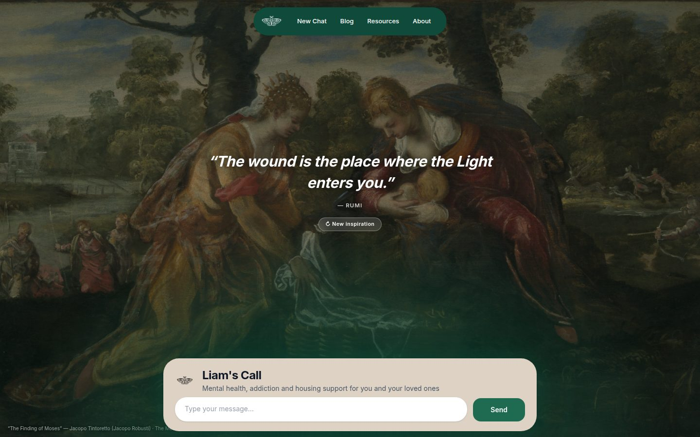
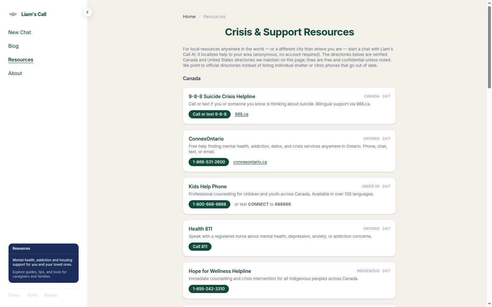
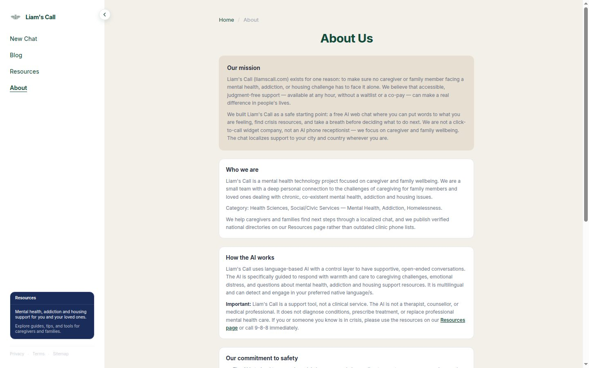
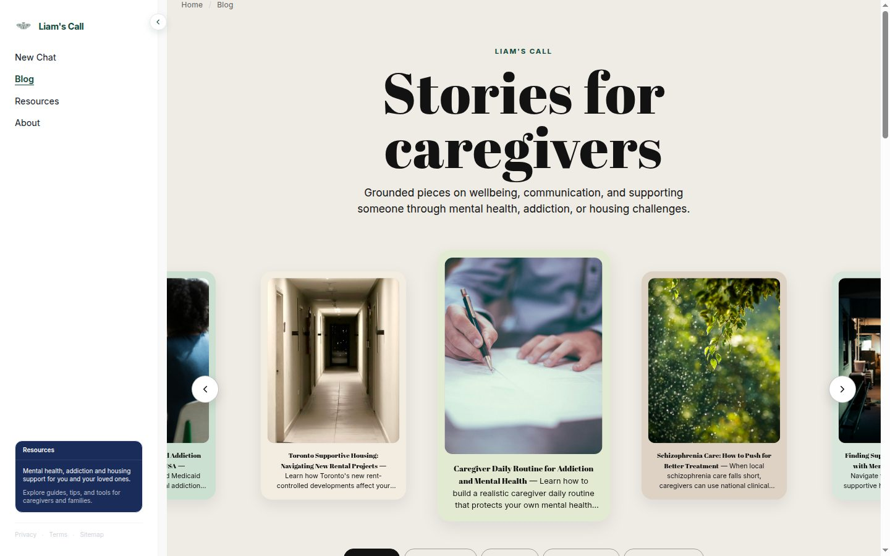
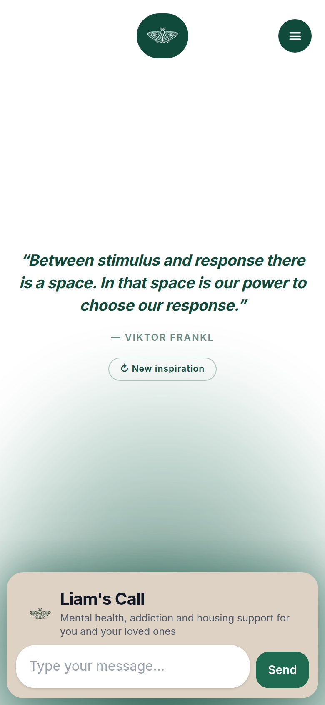

01 · Case study
Liam’s Call
Web designer & web developer
A free public website for caregivers and families facing mental health, addiction, and housing challenges — calm chat UI, brand system, and a multi-page civic experience, live in production.

Design problem
Families looking for help often land on cold directories, outdated phone lists, clinical jargon, or flashy chatbot demos that overpromise. The brief was the opposite: a calm first screen, clear hierarchy, mobile-first chat, and language that feels human at 2 a.m. Brand and UI had to read as trustworthy social/civic care — not a startup landing page, not a hospital portal.
What I designed and shipped
Brand & visual system
Product name, moth mark, and horizontal lockups. Forest-green / soft beige palette, typography, and site chrome shared across pages. Tone of voice: warm, steady, non-clinical — with clear crisis redirects when needed.
Core product UI — Chat
Full-bleed, quiet home composition with an inspirational line and primary chat surface. Streaming conversation UI with send affordance and mobile navigation. Onboarding-safe copy for what the tool is — and what it is not. Localized support framing when available.
Information architecture
Resources — verified Canada & U.S. crisis lines and directories. About — mission, audience, how the AI works, safety, FAQ. Blog — caregiver articles with filters, readable layout, hero images. Privacy & Terms — plain legal pages for a public AI tool. Shared sidebar / mobile nav so chat, blog, and resources feel like one product.
Content & craft
Markdown → HTML blog with SEO-friendly structure, hero imagery, and a human review pass for sensitive pieces. Responsive layouts on phone and desktop. Production deploy on a custom domain, plus sitemap, robots, organization identity, and brand files for discoverability.
Liam’s Call is not a therapist, crisis line, or emergency service. In a crisis, call or text 9-8-8 (Canada & U.S.) or 9-1-1 — and see /resources.
I built Liam’s Call as a complete web experience — brand, chat, resources, and articles — because caregiver support should feel calm and clear, not like another form in a waiting room.
Screens



